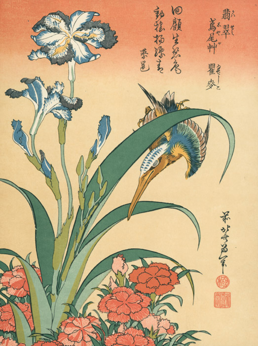

作品名 「翡翠･鳶尾艸･瞿麦」
花言葉 「反抗」「友人が多い」
シャガ
「反抗」
シャガの花名の由来は諸説あり、同じアヤメ属の檜扇（ヒオウギ）の漢名である「射干」を音読みしてつけられたともいいます。また、シャガ（射干）は「著莪」「胡蝶花」とも書かれ、別名ではコチョウカ（胡蝶花）とも呼ばれます。花言葉の「反抗」は、剣状の鋭い葉の様子や陽光を避けて日陰で花を咲かせることにちなむともいわれます。「友人が多い」の花言葉は、タネができず、地表をはう根茎を伸ばして群落を形成することに由来するといわれます。
翡翠･鳶尾艸･瞿麦
葛飾北斎
葛飾北斎は、江戸時代後期の浮世絵師です。主に風景を描いた作品で有名です。浮世絵だけでなく、漫画や挿絵師としても活躍し、大衆的な評価も得ていました。葛飾北斎の描く浮世絵は、その当時の日本の画家たちだけでなく、西洋の印象派の画家にも多大な影響を与えました。
| 作品名 | 翡翠･鳶尾艸･瞿麦 |
| 作者 | 葛飾北斎 |
| 制作年 | 江戸時代・19世紀 |
| 種類 | 中判 錦絵 |
| 所蔵 | 東京国立博物館 |